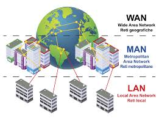
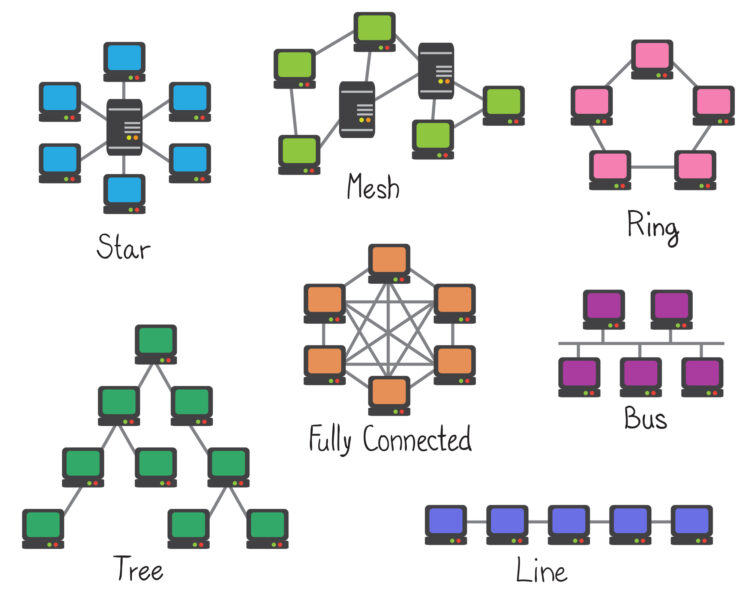
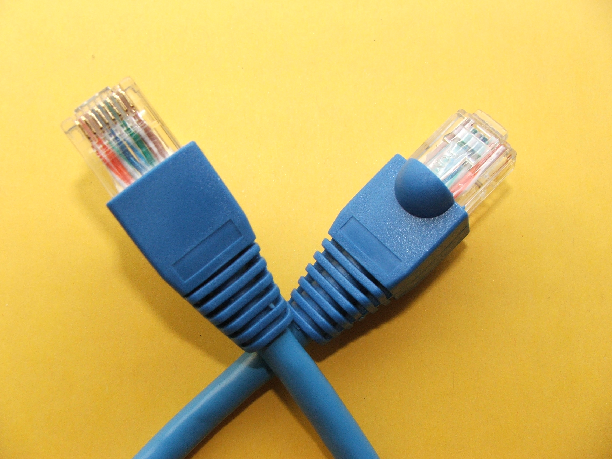
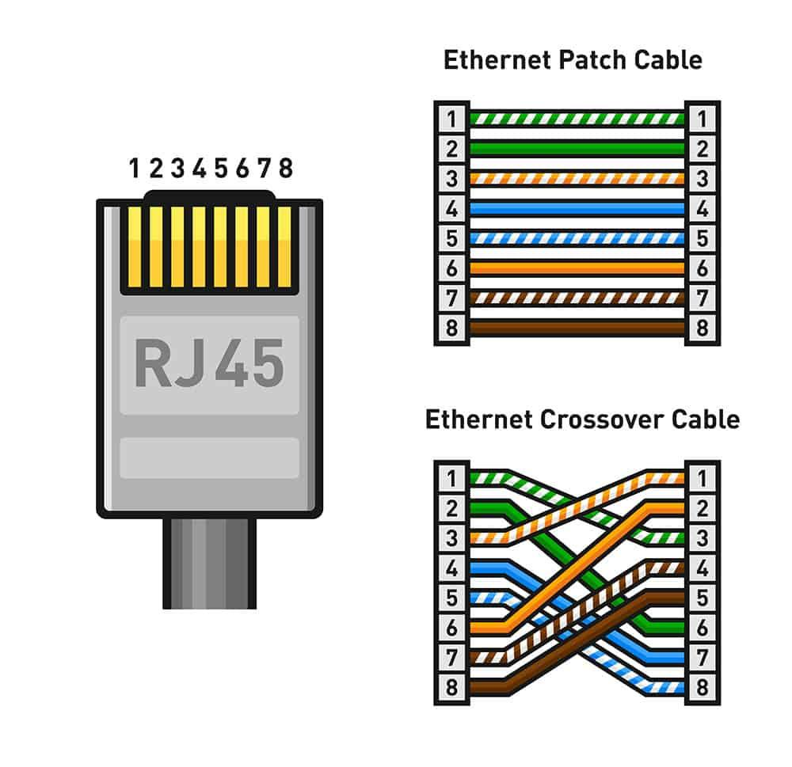
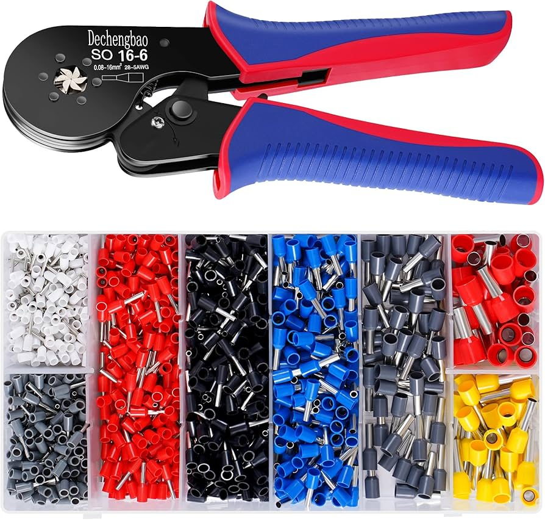

Introduzione al Networking e Cavi Ethernet
Unità 5: Introduzione al Networking
In questa unità, abbiamo esplorato i fondamenti della comunicazione in rete e le tipologie di reti.

- Comunicazione in Rete: Importanza della trasmissione dei dati e l'indirizzamento.
- Tipi di Rete:
- LAN (Local Area Network): Reti locali per connessioni in spazi ristretti.
- WAN (Wide Area Network): Reti che coprono aree geografiche più ampie.
- MAN (Metropolitan Area Network): Reti che connettono diverse LAN in contesti urbani.
- Topologie di Rete: Diverse configurazioni per la connessione dei dispositivi (es. bus, anello, stella).

Laboratorio: Realizzazione di un Cavo Ethernet
Il laboratorio ci ha guidato nella realizzazione di un cavo di rete UTP RJ45. Ecco i passi principali:

- Preparare gli strumenti necessari (cavo, connettori, pinze).
- Tagliare il cavo alla lunghezza desiderata.
- Scoprire i fili interni e disporli nell'ordine corretto (es. T568B).

- Inserire i fili nel connettore RJ45 e crimpare.
- Verificare la connessione con un tester di rete.
È importante seguire correttamente l'ordine dei fili per garantire una connessione efficace.

Conclusione
Il networking è un campo essenziale nella tecnologia moderna. Comprendere le basi delle reti e saper realizzare connessioni fisiche è fondamentale per chi desidera lavorare nel settore IT.